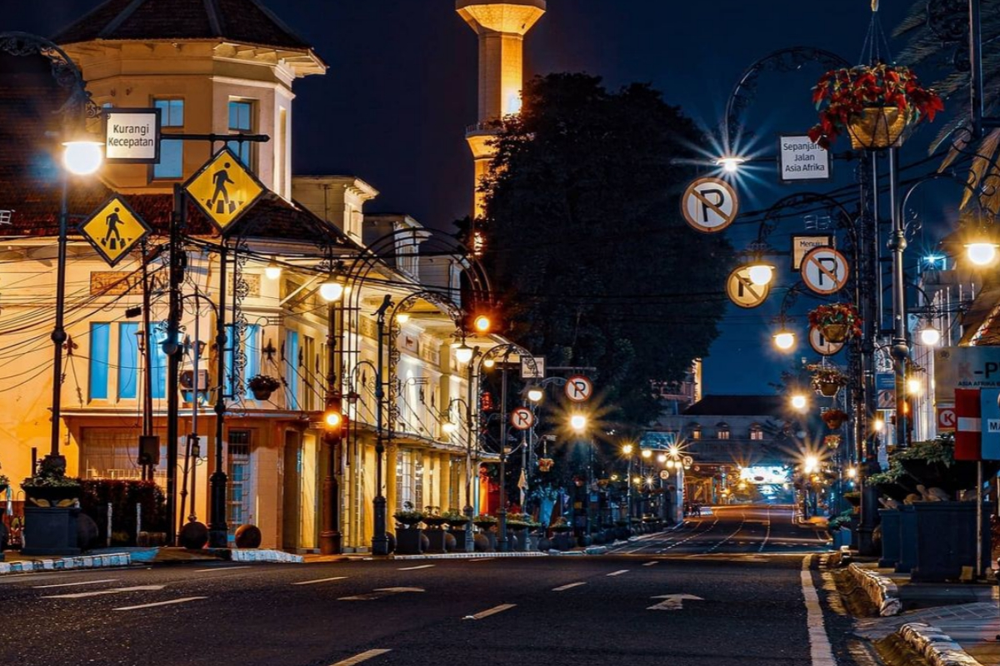
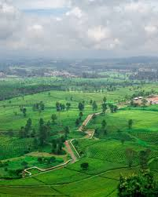
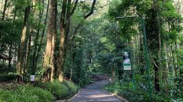

Informasi Kota Bandung
Bandung menjadi kota sejuta cerita dengan beragam keindahan.

Wisata
Destinasi populer di Bandung mencakup kawasan Braga, Lembang, Ciwidey, Pangalengan, dan kawasan Dago. Kawasan ini menyajikan kombinasi alam, sejarah, dan hiburan modern.

Fakta Menarik
Bandung menjadi pilihan favorit mahasiswa karena banyaknya kampus ternama dan suasananya yang sejuk, seperti UPI, ITB, UNPAD, UNPAR, BINUS, dan TELKOM.
https://www.transentertainment.com/

Kualitas Udara Bandung
Memuat data AQI...

Laporan Cuaca
Memuat data cuaca...
Informasi Spasial
Koordinat: 6.9175° S, 107.6191° E | Luas: ±167 km². Bandung terletak dalam cekungan Bandung dan dikelilingi pegunungan.
Sumber: Bappeda Kota Bandung